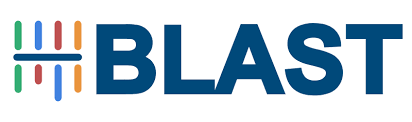
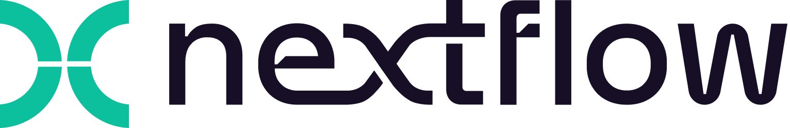
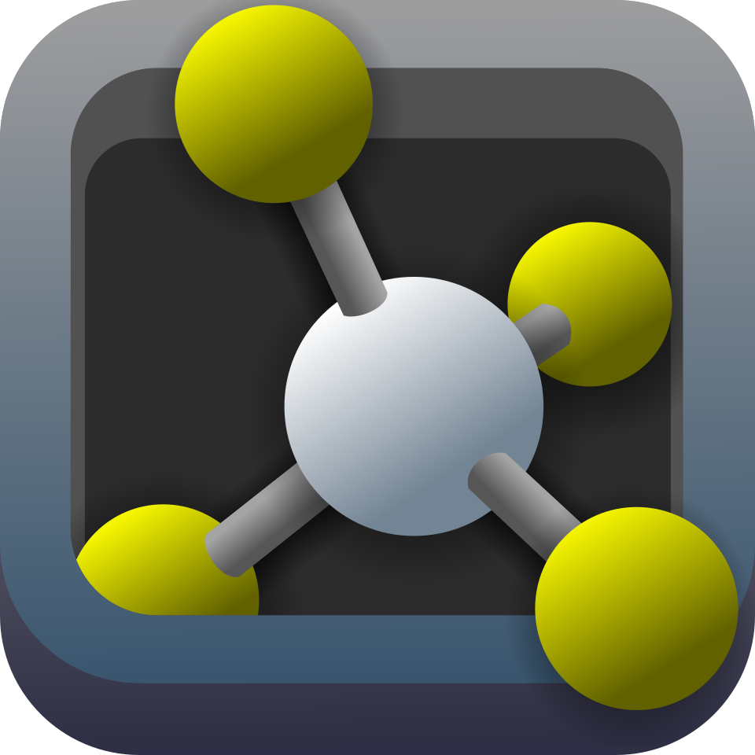

Tools & Skills
Python
R

BLAST

Nextflow

PyMOL
Tool Name
This section is currently under development.
Practical examples and projects demonstrating the use of this tool will be added soon.
I am a bioinformatics and biotechnology professional focused on data-driven biomedical research, with a particular interest in rare diseases and digital health.
My work combines computational analysis with patient-centered research approaches, including co-design methodologies, to better understand and improve clinical outcomes.
I am especially interested in developing data-driven solutions that translate complex biological and clinical data into actionable insights.
Python
R

BLAST

Nextflow

PyMOL
This section is currently under development.
Practical examples and projects demonstrating the use of this tool will be added soon.